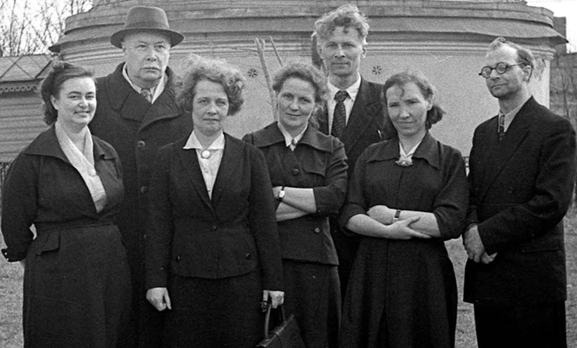
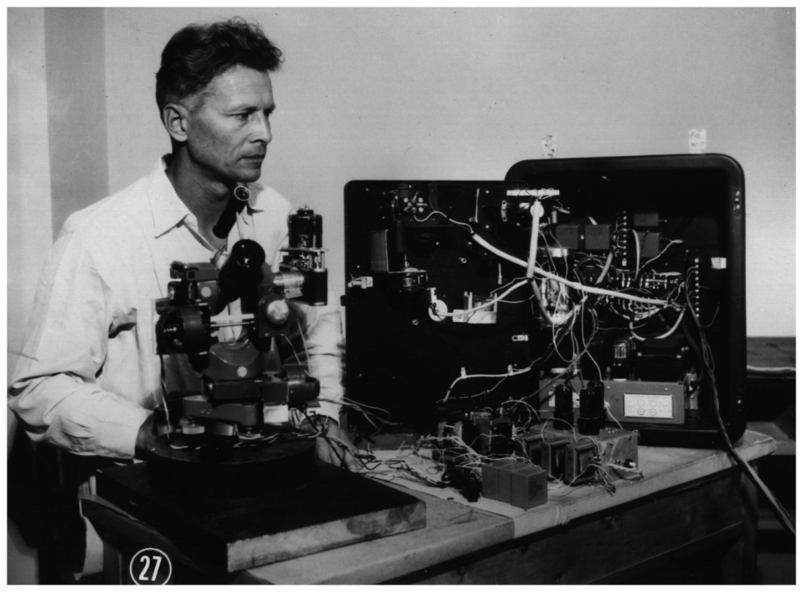

→ Yakovkin N. A.
Талановитий учений, вчитель і наставник
(до 110-річчя з дня народження М.А. Яковкіна)
Микола Авенірович Яковкін (перше фото) народився 15 квітня 1915 р. у місті Казань. У 1940 р. закінчив Свердловський державний університет. У 1944 р. приїхав у Київ у складі групи співробітників із Свердловська; у цій групі були М.А. Яковкін, Є.М. Земанек, Г.М. Сергєєва, А. Булигіна і Д.В. Пясковський.
Його батько, Авенір Олександрович Яковкін (див. друге фото), був відомим астрономом. Він народився 21 травня 1887 р. в с. Благовіщенський завод Уфимської губернії (тепер РФ), д-р фіз.-мат. наук, чл.-кор. АН УРСР. Закінчив у 1910 р. фізико-математичний факультет Казанського університету і залишений при кафедрі астрономії та призначений асистентом університетської астрономічної обсерваторії.
Згодом був переведений на заміську обсерваторію ім. Енгельгардта під Казанню, де працював асистентом (1911–19), астрономом-спостерігачем (1919–26), директором (1926–31). Одночасно викладав у Казанському університеті як приват-доцент (1916–26), професор (1926–37). Затверджений (1938) у ступені доктора фіз.-мат. наук без захисту дисертації. У 1945 переведений до Київського університету. Очолював відділ астрофізики Астрономічної обсерваторії до 1950 р., читав курси сферичної та теоретичної астрономії на кафедрі астрономії, 1948–51 рр. декан фізичного факультетуту.
У 1952 р. Авенір Олександрович був призначений директором Головної астрономічної обсерваторії АН України (1952–59), пізніше консультант ГАО (1960–68). Основні наукові роботи присвячені вивченню фігури та обертання Місяця. Отримав точні значення постійних фізичної лібрації Місяця. Встановив залежність місячного радіуса від оптичної лібрації по широті (ефект Яковкіна) і запропонував для пояснення залежності низку моделей фігури Місяця. Чл.-кор. АН УРСР (1951). Чл. постійної комісії з вивчення Місяця МАС (з 1928), Голова підкомісії з вивчення руху та фігури Місяця Всесоюзної астрономічної комісії (1937–61). Іменем А.О. Яковкіна названо кратер на Місяці.
Микола Авенірович Яковкін навчався спершу в аспірантурі в Астрономічній обсерваторії Київського університету, потім працював до 1990 р. на посадах старший науковий співробітник і завідувач відділу фізики Сонця Астрономічної обсерваторії. Кандидатську дисертацію «О теории солнечной короны» захистив у 1953 р. Галузь наукових інтересів – фізика Сонця, сонячна корона, протуберанці, спалахи, яскраві рентгенівські точки.
У 1952–1954 рр. спільно з М.В.Стешенком і П.М.Полупаном створив горизонтальний сонячний телескоп з дифракційним спектрографом для спектральних досліджень Сонця. Пізніше цей інструмент був оснащений ешельним дифракційним спектрографом, що потім виявилося дуже цінним для розвитку досліджень активних процесів на Сонці і вимірювання в них магнітних полів (див. нижче). Крім суто теоретичних досліджень, Микола Авенірович дуже успішно, з глибоким розумінням і практичним вмінням працював з оптико-електронним обладнанням обсерваторії (див. третє фото). Ним створений інтенсиграф – пристрій, який дозволяв переводити почорніння в інтенсивності шляхом неперервної реєстрації. Цей пристрій набагато пришвидшував опрацювання спектрів активних сонячних утворень, зокрема протуберанців і сонячних спалахів.

Група співробітників Астрономічної обсерваторії Київського університету ім. Т.Г. Шевченка в кінці 1950-х років:
у другому ряду – Яковкін А.О. і Яковкін М.А, у першому ряду – Земанек Є.М. (крайня зліва) і Осіпов О.К. (крайній справа).
Він був керівником 11 кандидатських дисертацій. В числі його учнів такі відомі вчені, як Костик Р.І., Братійчук М.В., Павленко Я.В., Курочка Л.М., Полупан П.М., Зельдіна М.Ю., Курочка Є.В., Руднікова К.Г., Чултем Ц., Лхакважав С., Eхгамбердієв Ш. Зокрема, він був керівником дисертаційної роботи Костика Р.І. на тему «Матричнi рiвняння дифузiї випромiнювання». Був активним учасником кількох експедицій з спостережень сонячних затемнень.
Микола Авенірович був непересічною особистістю, якого коротко можна охарактеризувати так: талановитий учений, вчитель і наставник, сміливий у науковому пошуку і водночас скромний в стосунках з колегами, сильний спектроскопіст світового рівня і водночас – позитивно-харизматична особа, до якої тягнулися учні і якого поважали колеги. Серед співробітників обсерваторії він виділявся спортивною статурою, особливою вродою, вродженою шляхетністю, а також глибокою допитливістю, винахідництвом і багатством інтелектуального потенціалу. Він був невгамовним генератором ідей, широко освіченою людиною, з яким були цікавими спілкування на будь-які теми. Його неординарні глибокі висловлювання збагачували, а інколи й спантеличували своєю несподіваністю. Це був Вчитель з великої лiтери, що не боявся пропонувати несподiванi, навiть парадоксальнi, на перший погляд, iдеї. Систематичне спiлкування з яким на рiзнi теми давало велике задоволення, часом змiнювало початковi уявлення його співрозмовників, примушувало з iншої точки зору дивитись на, здавалось би, добре вiдомi результати і факти.
М.А. Яковкін працює з оптико-електронним обладнанням обсерваторії.
Як нам відомо, у ті часи Микола Авенірович мав найбільше опублікованих статей (серед співробітників обсерваторії) у рейтингових міжнародних журналах. Зокрема, він мав 6 статей в журналі Solar Physics і 8 статей у Soviet Astronomy. Він також опублікував 13 статей у бюлетені «Солнечные данные» і ще більше статей у «Віснику Київського університету. Астрономія». По суті, за своїм науковим рівнем і по кількості публікацій Микола Авенірович безперечно відповідав доктору наук, однак цю дисертацію він не представляв до захисту. Можливо тому, що своїм основним результатом він вважав висновок про те, що сонячна корона насправді не гаряча, на рівні температур у мільйони градусів, а відносно холодна, з температурою на рівні 104 К. Цей висновок протирічив практично усім публікаціям інших авторів стосовно сонячної корони. Очевидно, розуміючи це і передбачаючи небезпроблемний захист докторської дисертації, Микола Авенірович не подавав її до захисту.
Микола Авенірович неодноразово і переконано представляв свою ідею «холодної» корони на семінарах і наукових зборах обсерваторії. На питання колег: «А що ж тоді робить корональні лінії такими широкими, як не висока температура ?» він відповідав так : «Це роблять корпускулярні потоки знизу, з-під фотосфери, з швидкостями сотні і тисячі кілометрів на секунду !». А на наступне питання «Хто і коли бачив такі потоки?», він відповідав: «Їх треба шукати, вони мають існувати !».
Ця ідея дуже зацікавила ще одного учня Миколи Авеніровича, чехословацького геліофізика Петера Хайнцеля (Peter Heinzel), професора, директора астрономічної обсерваторії в Ондржейові. Під час одного свого візиту в АО КНУ він висловив готовність розпочати пошуки спектральних проявів високошвидкісних потоків з-під фотосфери на основі ретельного вивчення тих ешельних спектрограм, які отримані на ГСТ АО КНУ. З певних причин цього тоді не було зроблено, однак вказівки на такі потоки були знайдені значно пізніше, коли досліджувались тонкі спектральні ефекти довкола вибраних магніточутливих ліній у широкому інтервалі довжин хвиль, до 15–30 ангстрем. Актуальність цього обгрунтована у таких недавніх роботах: https://doi.org/10.1093/mnras/stad1816, https://doi.org/10.1093/mnrasl/slad163, https://doi.org/10.3390/universe10060262 . Відповідний спектральний матеріал отримано у 2023 р. – у тому самому році, коли дах ГСТ АО КНУ був пробитий осколком ворожого дрона. При цьому, на щастя, наукова апаратура інструмента не постраждала. Виявилось, що у сонячній плямі, на віддалях –18.8 і –8.4 ангстрема відносно лінії D3 гелію, існують протилежно поляризовані відносно слабкі особливості (5%), які можуть вказувати на дуже сильні магнітні поля і потоки з-під фотосфери з швидкістю 700 км/сек. Це дуже схоже на те, що очікував знайти наш Вчитель. Відповідні матеріали послані у вигляді статті у міжнародний журнал.
Приємно відзначити, що наукова династія Яковкіних була успішно продовжена, зокрема синами Миколи Авеніровича Іваном Миколайовичем та Володимиром Миколайовичем, а також онуками Костянтином Івановичем та Іваном Івановичем.
Автори цієї статті щиро вдячні Івану Миколайовичу Яковкіну за надані фотографії, матеріали і коментарі, які були використані при підготовці цієї публікації.
Автори статті:
Всеволод Лозицький, Володимир Єфіменко, Роман Костик, Катерина Руднікова і Маргарита Пасечник.